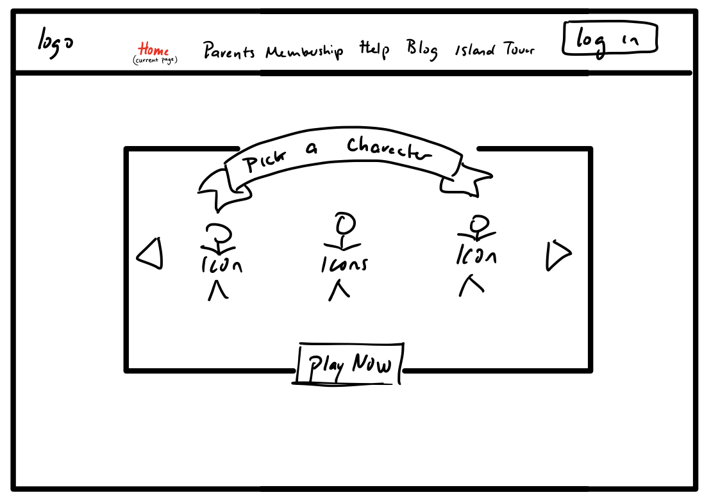
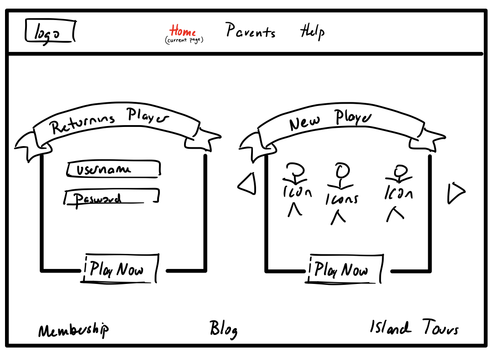

Using the favorite website you chose in homework 1, create a wireframe for one page of it using pen/paper, PowerPoint, or any your tool of choice. (use the 'img' tag!) Make sure to let us know what the name of your website is (Use the 'p' tag!)
Try to improve the website you've chosen, and create a redesigned wireframe of one page for the same website using the principles of visual hierarchy that you learned from the article.
-
What is the goal of the website? Who is it intended for? How does the design accomplish this? Write 2-3 sentences answering these questions. (Use the 'p' tag again!)
This website is video exploration game made for kids ages 8+. The design lends itself to this function by being easy to navigate by kids who may have little online and reading experience, and easily providing parent information. Since the new player features are central on this website, it is more easily functional for new players as opposed to returning players.
-
Write 2-3 sentences about what problems your redesign addressed, and how it solved them.
The home page of this website favors new players ass opposed to quickly providing log in information for returning players. When redesigning this home page I split the screen between new and returning players. I also simplified the top information bar with only necessary features and providing unnecessary information further down on the webpage.
NOTE: Make sure to include the wireframe images in the website and don't just put it in your assets folder!
Your wireframes should look something like this: